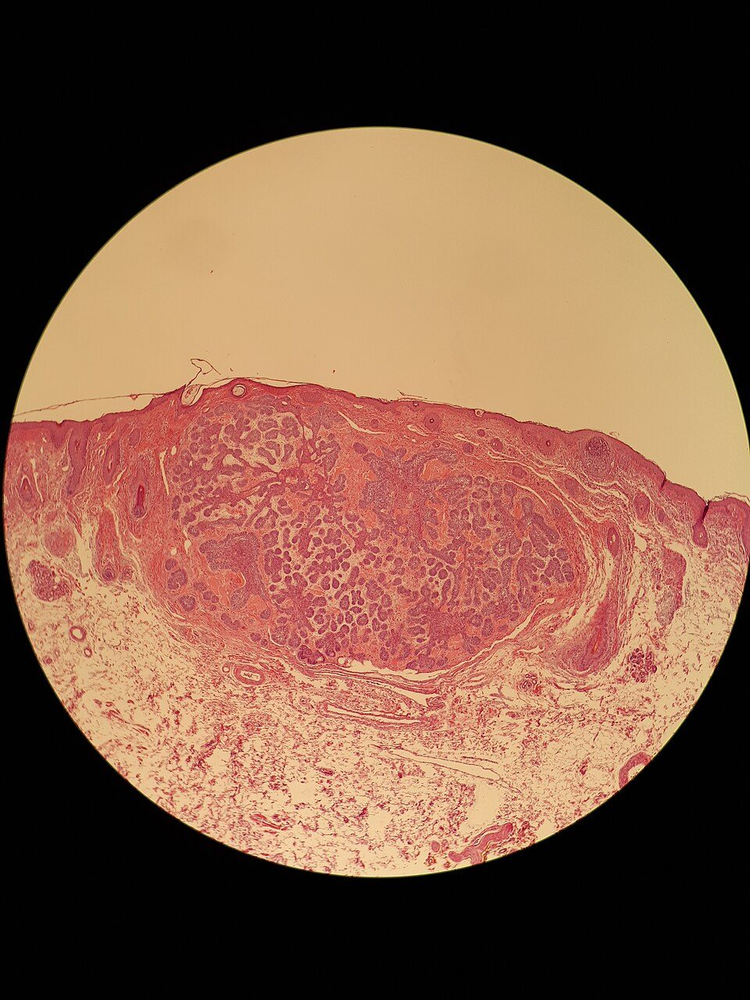

General information only. It does not replace advice from your care team and should not be used to choose a treatment.

.jpg){kind=link}
At a glance
| How common | The most common cancer: millions of cases a year; 3 in 4 skin cancers |
| Who | Over-50s with fair skin and a lot of accumulated sun |
| Where | Face (nose, eyelids, ears), neck, trunk |
| Appearance | Pearly or shiny bump with small vessels, a sore that does not heal, or a bleeding scab |
| Treatment | Surgery (including Mohs); creams, photodynamic therapy or radiotherapy in selected cases |
| Cure | Over 95% |
What it is
It arises from the basal cells of the epidermis. It is locally invasive: left for years it can destroy skin, cartilage and bone, especially on the face, but metastases are exceptional (under 0.1%).
Subtypes: nodular (the most common), superficial (a reddish scaly patch on the trunk), morphoeic or infiltrative (scar-like, poorly defined, harder to treat) and pigmented.
Risk factors
Accumulated ultraviolet radiation, fair skin, age, previous radiotherapy, weakened immunity (transplant recipients), arsenic and the rare Gorlin syndrome (multiple basal cell carcinomas from youth, due to PTCH1 mutations).
Diagnosis and treatment
- Dermoscopy and biopsy.
- Surgical excision with margins; Mohs surgery (checking all margins under the microscope at the time) is reserved for the face and recurrent or poorly defined tumours: it cures over 99% and spares healthy tissue.
- Superficial tumours: imiquimod or 5-fluorouracil cream, photodynamic therapy, curettage or cryotherapy.
- Radiotherapy in older people or when surgery is difficult.
- Advanced or metastatic cases (very rare): Hedgehog pathway inhibitors (vismodegib, sonidegib) and, if these fail, cemiplimab.
Afterwards
Anyone who has had one has a 40% chance of another within three years: yearly skin checks and sun protection. Nicotinamide (vitamin B3) reduces new non-melanoma skin cancers in high-risk people (ONTRAC trial).
See also: Melanoma, Cutaneous squamous cell carcinoma.
History · Medicapedia
Basal cell carcinoma in the history of medicine
How it was discovered, who studied it and how its treatment changed over the centuries, told on Medicapedia, our sister site on the history of medicine.
Read the history on Medicapedia ↗Sources
- Peris K, et al. European consensus-based interdisciplinary guideline for diagnosis and treatment of basal cell carcinoma – update 2023. Eur J Cancer. 2023;192:113254.
- Chen AC, et al. A phase 3 randomized trial of nicotinamide for skin-cancer chemoprevention (ONTRAC). N Engl J Med. 2015;373:1618-1626. doi:10.1056/NEJMoa1506197
- British Association of Dermatologists. Basal cell carcinoma. skinhealthinfo.org.uk